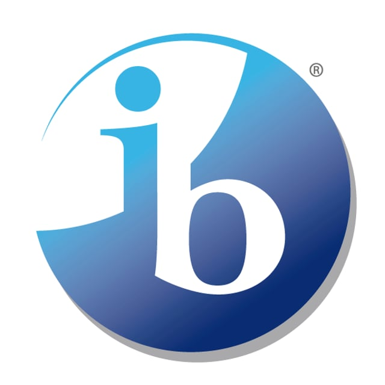

Incoming Summer Analyst
JPMorganChase
Sep 2026 – Present Incoming
New York, NY
Incoming Summer GF&BM Analyst.
A LITTLE ABOUT ME
Economics & International Relations at Stanford.
Finance, research, and community.
Currently Studying at Stanford University,
with roots in Miami Beach.
Incoming Summer GF&BM Analyst
Research Assistant
Founder · Environment
Bachelor’s degree · Economics & International Relations
Resident Advisor · La Familia Lab Research Assistant · Office of Community Standards Undergraduate Representative · Haas Center for Public Service · The Stanford Daily
Finance, consulting, and behavioral research.
JPMorganChase
Sep 2026 – Present Incoming
New York, NY
Incoming Summer GF&BM Analyst.
Stanford Graduate School of Business
Mar 2026 – Present
Stanford, CA
Behavioral Lab research on decision-making, motivation, culture, and human behavior.
Sponsors for Educational Opportunity
Feb 2025 – Present
New York, NY
Apprenticeship
PwC
Jun – Aug 2026
New York, NY
Aplazo
May – Aug 2025
Mexico City, Mexico
Analyzed campaign performance across LATAM markets.
From Miami Beach to Stanford.
Stanford University
2024 – 2028

International Baccalaureate
2022 – 2024
GPA: 4.0 unweighted · 5.314 weighted
Miami Beach Senior High School
2020 – 2024
Financial markets and valuation.
Wall Street Prep
Issued Aug 2026
Credential ID 191235516Wall Street Prep
Issued Aug 2026
Credential ID 191232710Caring for the waters we call home.
Paddle Clean Miami
Feb 2021 – Present
Miami, FL
Bringing peers and teenagers together to paddleboard and clean Miami’s waterways. Building a community around environmental stewardship.
Paddle Clean Miami on Instagram ↗Let's connect.
Say hello